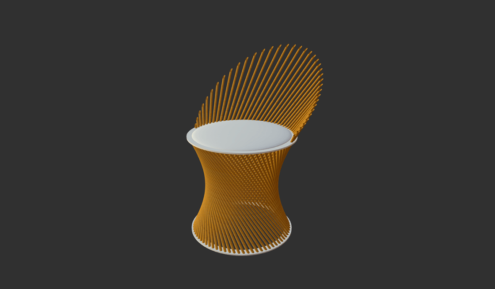
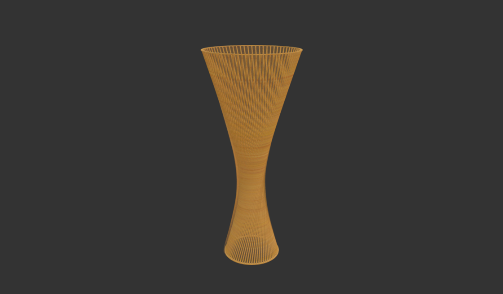
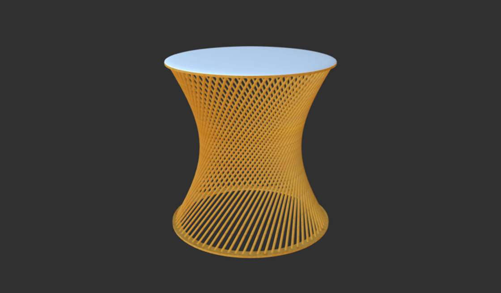

Hourglass Line
The hourglass line of products is an attempt to renovate some of the lines of products that Puulon sells. Some of their line of products, like “inch” or “boom-sarja”, are composed of chairs, tables and coffee tables.
We decided to create this new line of products with the same idea, but adding something that Puulon hasn’t got, such as lamps. One idea we found was “regulated surfaces”.
To build the structure for the chairs and tables we wanted to use wooden bars and for the chair and table surfaces we wanted to use plywood. These products are very light and resistant because they are composed by thin wooden bars which are resistant due to the positioning of the structure.
Alternative designs

Chair design

Lamp design

Stool design